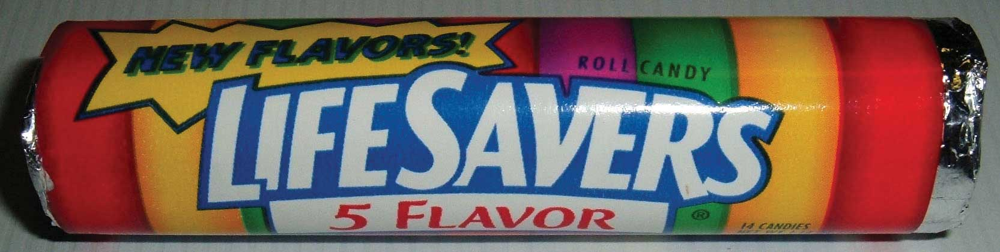
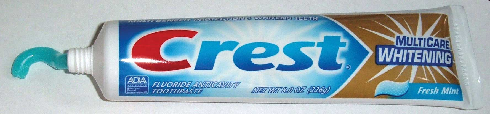
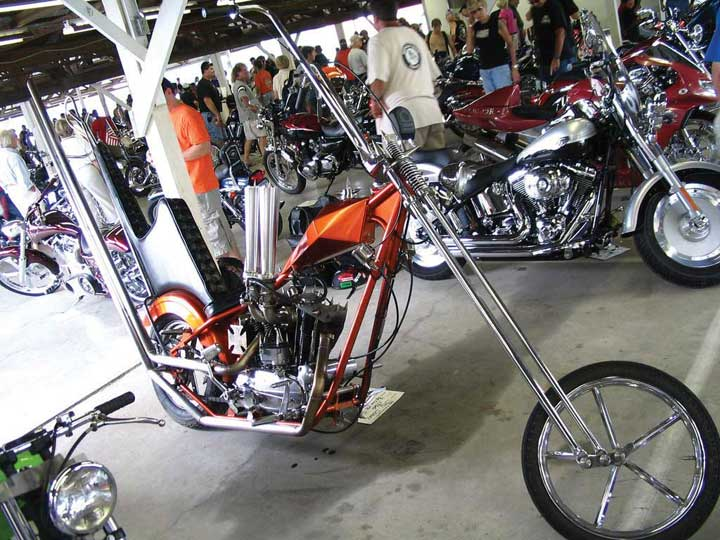

Products and services can be categorized in a number of ways. We will use these categories throughout the book because they are the most commonly referred to categories by marketers and because there are marketing implications for each. Consumer offerings fall into four general categories:
In this section, we will discuss each of these categories. Keep in mind that the categories are not a function of the characteristic of the offerings themselves. Rather, they are a function of how consumers want to purchase them, which can vary from consumer to consumer. What one consumer considers a shopping good might be a convenience good to another consumer.
Convenience offeringsLow-priced, frequently purchased products and services that require little shopping effort. are products and services consumers generally don’t want to put much effort into shopping for because they see little difference between competing brands. For many consumers, bread is a convenience offering. A consumer might choose the store in which to buy the bread but be willing to buy whatever brand of bread the store has available. Marketing convenience items is often limited to simply trying to get the product in as many places as possible where a purchase could occur.
Figure 6.10
The Life Savers Candy Company was formed in 1913. Its primary sales strategy was to create an impulse to buy Life Savers by encouraging retailers and restaurants to place them next to their cash registers and include a nickel—the purchase price of a roll of Life Savers—in the customer’s change.
Source: Wikimedia Commons.
Closely related to convenience offerings are impulse offeringsAn offering that is purchased on impulse, without prior planning., or items purchased without any planning. The classic example is Life Savers, originally manufactured by the Life Savers Candy Company, beginning in 1913. The company encouraged retailers and restaurants to display the candy next to their cash registers and to always give customers a nickel back as part of their change so as to encourage them to buy one additional item—a roll of Life Savers, of course!
A shopping offeringAn offering for which the consumer will make an effort to compare various firms’ offerings and select a brand. is one for which the consumer will make an effort to compare and select a brand. Consumers believe there are differences between similar shopping offerings and want to find the right one or the best price. Buyers might visit multiple retail locations or spend a considerable amount of time visiting Web sites and reading reviews about the product, such as the reviews found in Consumer Reports.
Consumers often care about brand names when they’re deciding on shopping goods. If a store is out of a particular brand, then another brand might not do. For example, if you prefer Crest Whitening Expressions toothpaste and the store you’re shopping at is out of it, you might put off buying the toothpaste until your next trip to the store. Or you might go to a different store or buy a small tube of some other toothpaste until you can get what you want. Note that even something as simple as toothpaste can become a shopping good for someone very interested in her dental health—perhaps after she’s read online product reviews or consulted with her dentist. That’s why companies like Procter & Gamble, the maker of Crest, work hard to influence not only consumers but also people like dentists who influence the sale of their products.
Figure 6.11
If your favorite toothpaste is Crest’s Whitening Fresh Mint, you might change stores if you don’t find it on the shelves of your regular store.
Source: Wikimedia Commons.
Specialty offeringsAn offering that is highly differentiated from other offerings and is designed to satisfy a similar need or want. are highly differentiated offerings, and the brands under which they are marketed are very different across companies, too. For example, an Orange County Chopper or Iron Horse motorcycle is likely to be far different feature-wise than a Kawasaki or Suzuki motorcycle. Typically, specialty items are available only through limited channels. For example, exotic perfumes available only in exclusive outlets are considered specialty offerings. Specialty offerings are purchased less frequently than convenience offerings. Therefore, the profit margin on them tends to be greater.
Note that while marketers try to distinguish between specialty offerings, shopping offerings, and convenience offerings, it is the consumer who ultimately makes the decision. Therefore, what might be a specialty offering to one consumer may be a convenience offering to another. For example, one consumer may never go to Sport Clips or Ultra-Cuts because hair styling is seen as a specialty offering. A consumer at Sport Clips might consider it a shopping offering, while a consumer for Ultra-Cuts may view it as a convenience offering. The choice is the consumer’s.
Figure 6.12
Specialty offerings, such as this custom-made motorcycle, are highly differentiated. People will go to greater lengths to shop for these items and are willing to pay more for them.
Source: Wikimedia Commons.
Marketing specialty goods requires building brand name recognition in the minds of consumers and educating them about your product’s key differences. This is critical. For fashion goods, the only point of difference may be the logo on the product (for example, an Izod versus a Polo label). Even so, marketers spend a great deal of money and effort to try to get consumers to perceive these products differently than their competitors’.
Unsought offeringsAn offering consumers don’t typically shop for until it is needed. Examples include funeral and towing services. are those that buyers do not generally want to have to shop for until they need them. Towing services and funeral services are generally considered unsought offerings. Marketing unsought items is difficult. Some organizations try to presell the offering, such as preneed sales in the funeral industry or towing insurance in the auto industry. Other companies, such as insurance companies, try to create a strong awareness among consumers so that when the need arises for these products, consumers think of their organizations first.
Convenience offerings, shopping offerings, specialty offerings, and unsought offerings are the major types of consumer offerings. Convenience offerings often include life’s necessities (bread, milk, fuel, and so forth), for which there is little difference across brands. Shopping goods do vary, and many consumers develop strong preferences for some brands versus others. Specialty goods are even more exclusive. Unsought goods are a challenge for marketers because customers do not want to have to shop for them until they need them.